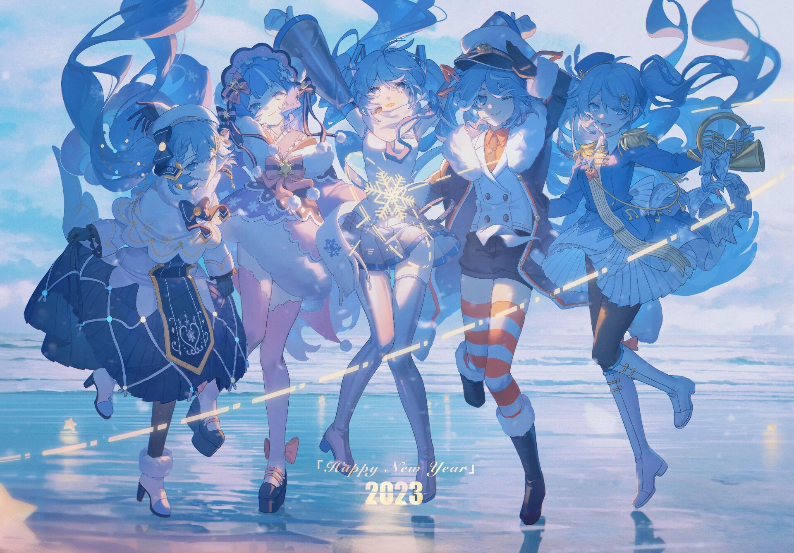

你怎么知道这是初音未来的？
初音未来（日语：初音（はつね） ミク，平文式罗马字：Hatsune Miku）是Crypton Future Media株式会社企划、开发、贩售的，使
用YAMAHA的VOCALOID引擎和Crypton自主研发的NT歌声合成引擎的声音库软件及其拟人化形象。
初音未来与镜音铃·连、巡音流歌、MEIKO、KAITO共称为“Piapro角色”，或“初音未来和她的伙伴们”。初音未来也是Crypton“角色主唱系
列”（Character Vocal Series）的第一作，代号为CV01。
初音未来的日文与英文简称分别为“ミク”与“Miku”（两者读音基本相同），而中文社区则经常简称为“初音”。
“初音未来”“初音ミク”“雪未来”“樱花未来”“赛车未来”等为Crypton在中国大陆地区的注册商标。
2014年末至今（2023年11月），上海新创华文化发展有限公司是初音未来等Crypton旗下虚拟歌姬角色形象、IP在中国大陆地区的版权总代理。
自发行以来，初音未来、Crypton公司与广大创作者和受众们逐渐建立着“向未来无限延续的「初音未来」创作文化”。
本文引自萌娘百科(https://mzh.moegirl.org.cn )，文字内容默认使用《知识共享 署名-非商业性使用-相同方式共享 3.0 中国大陆》协议。 （点击图片有惊喜哦） （点击之前可稍稍停顿~）（停顿后注意鼠标附近的文字desu！）
|
|
|  | |